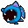
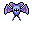
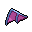
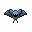

Pokédex / #041

Zubat #041
PoisonFlying
It has no eyes. Instead, it relies on its ultrasonic cries for echo location to flit about in darkness.
Generation 1 · Kanto

Stats
| Attack | 45 | |
|---|---|---|
| Defense | 35 | |
| Sp. Atk | 30 | |
| Sp. Def | 40 |
In the wild
| Wild level | 5–15 |
|---|---|
| HP | 40 |
| Experience | 7 |
| Egg groups | Flying |
Evolution
- Evolves into Golbat at level 35.
Moves
| Level | Move | Type | Category | Power | Energy | Cooldown | Effect | |
|---|---|---|---|---|---|---|---|---|
| 1 | Tackle | Normal | Physical | 15 | 15 | 1s | Tackle is one of the most common and basic moves a Pokemon learns. It deals damage with no additional effects. | |
| 5 | Leech Life | Bug | Physical | 20 | 35 | 7s | Leech Life inflicts damage, and up to 50% of the damage dealt to the target is restored to the user as HP. | |
| 10 | Bite | Dark | Physical | 60 | 60 | 9s | Bite deals damage and has a 30% chance of causing the target to flinch. | |
| 15 | Swift | Normal | Special | 60 | 60 | 9s | Swift deals damage and ignores changes to the Accuracy and Evasion stats. | |
| 20 | Wing Attack | Flying | Physical | 60 | 70 | 14s | Wing Attack inflicts damage and has no secondary effect. | |
| 25 | Supersonic | Normal | Status | – | 20 | 14s | Supersonic causes the target to become confused. | |
| 30 | Poison Fang | Poison | Physical | 50 | 55 | 8s | Poison Fang inflicts damage and has a 30% chance of badly poisoning the target. |
Field abilities
Find
Special abilities
Inner Focus
Egg moves
Brave BirdCurseDefogFaint AttackGiga DrainGustHypnosisNasty PlotPursuitQuick AttackSteel WingVenom DrenchWhirlwindZen Headbutt
Technical machines
Aerial AceBideDouble EdgeDouble TeamGiga DrainMega DrainMimicRageRain DanceRazor WindRestShadow BallSludge BombSteel WingSubstituteSwiftTake DownTauntToxicWhirlwind
Drops
| Item | Amount | Chance | |
|---|---|---|---|
| bottle of poison | 1–3 | 66.7% | |
| tooth | 1 | 14.8% | |
 | bat wing | 1 | 8.89% |
| red apple | 1–5 | 5% | |
 | zubat doll | 1 | 0.1% |